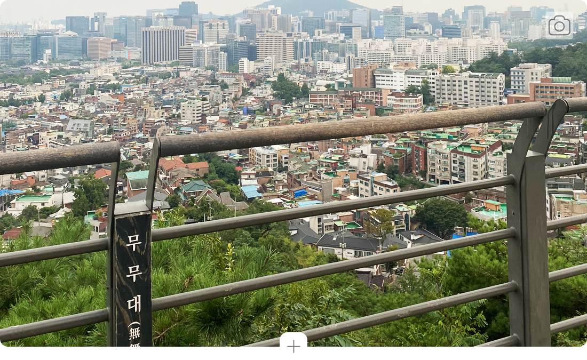
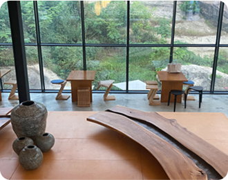
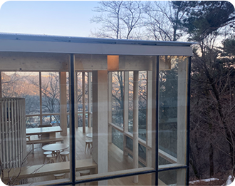
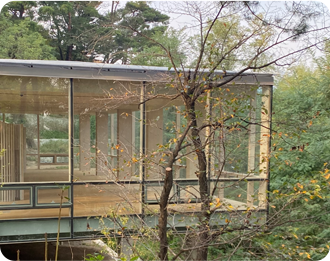

인왕산이 감싸 안은 동네이다 보니 서촌에는 근사한 뷰를 만끽할 수 있는
곳들이 있습니다. 우선 옥인동 수성동 계곡에서 20~30분 정도 산길을
오르면 무무대 전망대가 나옵니다.
아무것도 없이 아름다움만 존재한다는 뜻처럼 북악산, 망우산, 낙산을 거쳐 청계산, 관악산으로 이어지는 뷰가 장관인 곳이에요. 경복궁과 광화문, 청와대 역시 한눈에 보이고 시계가 좋은 날에는 저 멀리 롯데월드 타워까지도 확인할 수 있죠. 일출과 일몰 때도 좋고 새까만 밤 노랗게 빛나는 서울의 야경을 보기에도 그만 입니다.
아무것도 없이 아름다움만 존재한다는 뜻처럼 북악산, 망우산, 낙산을 거쳐 청계산, 관악산으로 이어지는 뷰가 장관인 곳이에요. 경복궁과 광화문, 청와대 역시 한눈에 보이고 시계가 좋은 날에는 저 멀리 롯데월드 타워까지도 확인할 수 있죠. 일출과 일몰 때도 좋고 새까만 밤 노랗게 빛나는 서울의 야경을 보기에도 그만 입니다.
- 
- 
- 
무무대에서 멀지 않은 곳에는 더숲 초소책방(@chosochaekbang)과 인왕3분초
쉼터가 있습니다.
두 곳 모두 비교적 최근에 문을 연 곳들입니다. 1968년 남파 무장공작원들이 청와대를 습격하기 위해 북 에서 내려오는 사건이 있었습니다. 그 사건 이후 인왕산과 북악산에는 약 30여개의 군 초소 및 경계시설이 들어섰지요. 더불어 그 근방은 오랫동안 시민들의 출입이 통제되었는데 시대가 바뀌며 점차 그 수를 줄 여오다가 2018년 인왕산 전면 개방에 따라 대부분 철거되었지요. 이때 몇 곳의 초소를 남겨 문화시설로 탈바꿈했는데 더숲 초소책방과 인왕3분초 쉼터가 그중 한 곳입니다. 특히 인왕3분초 쉼터는 건물의 사면 을 통유리로 마감해서 인왕산 숲을 파노라마처럼 감상할 수 있어요.
두 곳 모두 비교적 최근에 문을 연 곳들입니다. 1968년 남파 무장공작원들이 청와대를 습격하기 위해 북 에서 내려오는 사건이 있었습니다. 그 사건 이후 인왕산과 북악산에는 약 30여개의 군 초소 및 경계시설이 들어섰지요. 더불어 그 근방은 오랫동안 시민들의 출입이 통제되었는데 시대가 바뀌며 점차 그 수를 줄 여오다가 2018년 인왕산 전면 개방에 따라 대부분 철거되었지요. 이때 몇 곳의 초소를 남겨 문화시설로 탈바꿈했는데 더숲 초소책방과 인왕3분초 쉼터가 그중 한 곳입니다. 특히 인왕3분초 쉼터는 건물의 사면 을 통유리로 마감해서 인왕산 숲을 파노라마처럼 감상할 수 있어요.